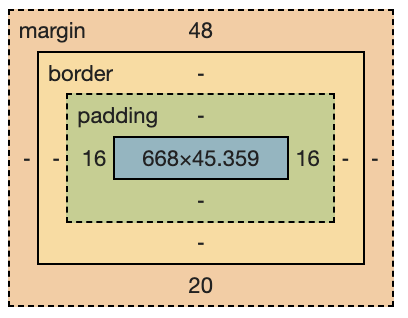

Box Model
The Box Model in CSS refers to the box that surrounds each element. Each element can have padding, border, and margin (except for inline elements which cannot have top/bottom margin). The Box Model illustrates how the padding is inside the box, border at the edge of the box, and margin on the outside.
The Dev Tools show a box model for each element. The following model is from the Box Model heading above.
Flow Layout
Flow Layout is the default layout mode HTML offers without any CSS modifications.
Inline elements cannot have top and bottom margin, and their height and width cannot be changed.
The exception is the <img> tag. It's an inline element, but it's width and height can be changed. However, it's best to change images to display: block in your CSS reset anyway.
The <button> tag is also a special inline element that allows for top/bottom margins.
In Flow layout, you rely on margin, padding, and border to create the layout.
Center Elements with Margin
Think of margin as the gap between elements.
You can horizontally center items with left and right margin set to auto.
"This only works for horizontal margin. Setting top/bottom margin to auto is equivalent to setting it to 0px*.
This only works on elements with an explicit width. Block elements will naturally grow to fill the available horizontal space, so we need to give our element a width in order to center it." -Josh Comeau
Margin Collapse
If you find margin doing unexpected things, it might be due to margin collapse. This happens when two margins share the same space.
Margins only collapse in Flow Layout, the default CSS layout. They won't collapse with Flexbox or Grid. Also, only adjacent elements collapse. If the collapsing margins have different values, the bigger value wins. Padding or border will prevent margins from collapsing.
"What if we have multiple margins competing for the same space, and some are negative? If there are more than 2 margins involved, the algorithm looks like this:
Find the largest positive margin
Find the largest negative
margin
Add those two numbers together" -Josh Comeau
Some developers have decided margin is too unpredictable and should be avoided. Better to use padding and layout when possible.
Positioned Layout
In Positioned Layout, items can overlap. To create a positioned layout, use the position property. The default setting is static, which means there is no positioning set. Options for positioning are relative, absolute, fixed, or sticky.
Stacking Contexts
Z-Index has no effect on Flow layout elements. It works with Positioned layout, as well as Flexbox and Grid. The DOM order defines which overlapping elements sit in front of the others, but a positioned element will always sit in front of a non-positioned element. If you need to control the order further, use z-index. The default value is 0, and anything greater will promote that element in front of others.
Whenever an element is given a position (no matter which one: relative, absolute, etc.) AND a z-index (see definintion below), it creates a stacking context. In a stacking context, only siblings are compared to determine which element overlaps the other. No matter how high of a z-index you give a child element, it will never override the z-index of its parent element.
Other situations that create a new stacking context (from Josh Comeau):
Setting opacity to a value less than 1
Setting position to fixed or sticky (No z-index needed for these
values!)
Applying a mix-blend-mode other than normal
Adding a z-index to a child inside a display: flex or display:
grid container
Using transform, filter, clip-path, or perspective
Explicitly creating a context with isolation: isolate
Isolation
Best way to control stacking contexts is to create them on purpose using the property designed for this purpose, isolation: isolate;
This setting creates its own stacking context. That way, all of the children within it will only compare z-index values with each other and not with outside elements like nav bars, sticky headers, etc.
Relative Position
Setting position: relative by itself will do nothing! Use it in combination with top, bottom, left, and right properties. Think of it like a relative pushing you around. When you set position: relative and add a direction the push is coming from left: 40px, then the item will be moved from that direction.
Cool thing about relative positioning is that the browser still thinks of the item as being in its original position. So unlike margin, relative positioning can shift an element without pushing anything around it!
Even inline elements can be assigned relative positioning:
This text has no positioning, while this text is set to position: relative, bottom: 5px.
Absolute Position
Absolute positioning pulls an element out of the flow of the page and puts it wherever specified by the properties top, right, bottom, left.
But, unexpected overlap can be a problem with absolute positioning. Also, a parent div will collapse if it has no height or width settings, and the child element inside of it is absolutely positioned.
Center Elements
There's a trick to center elements using absolute positioning. Cool thing about it? It centers elements both horizontally AND vertically.
"There are 4 important ingredients for this trick to work:
Absolute positioning (position: absolute)
Equal distances
from each edge (ideally 0px)
A fixed size (defined width and
height properties, fit-content works here)
Hungry margins
(margin: auto)" -Josh Comeau
Containing Blocks
Elements that are absolutely positioned are pulled out of the flow of the layout and ignore a lot of the rules of Flow layout. One of those rules is in regard to containing blocks. It doesn't matter if a child element is inside of a parent element in the HTML. When absolutely positioned, it will go outside of the parent element if told to do so.
But! If the parent is also using any of the Positioned layouts, the child element will be forced to stay inside of the parent element. This can lead to unexpected behavior!
Also, the child element disregards the padding of the parent element. Absolutely positioned elements ignore padding!
Absolutely positioned elements ignore the overflow of parent elements as well.
Fixed Position
To use fixed positioning, give your element the declaration of position: fixed AND give it a location using right, left, top, bottom. If a fixed position element isn't given a location, it will remain in its default "in flow" position. If that default location happens to be off screen, when you scroll, the fixed item will never appear.
Fixed positioning is similar to Absolute positioning in that it is pulled out of the flow of the document. However, it is different in that it is immune to scrolling.
If your fixed position element IS scrolling, chances are there's a parent/grandparent element using the transform property. This can mess with fixed positioning.
Fixed position elements are immune to overflow settings. That's because the parent of fixed elements is the viewport, not the HTML elements.
Sticky Position
Sticky positioning is a blend between relative and fixed.
'[P]osition: sticky is the newest addition to the crew. The idea is that as you scroll, an element can "stick" to the edge. At that moment, it transitions from being relatively-positioned to being fixed-positioned.
In addition to setting position: sticky, you also need to pick at
least one edge to stick to (top, left, right, bottom). Most
commonly, this is done with top: 0px.'
-Josh Comeau
Cool thing about sticky headers: they stay in their containing blocks. So it will stick in place until the containing block is scrolled out of view.
Sticky elements sometimes unexpectedly don't stick, especially if it's parent/grandparent container has overflow: hidden.
Flexbox
Flexbox is CSS's first intentional layout mechanism. Flexbox works best for elements in a single dimension: think of a straight line of elements, whether in a row or column, like a nav bar or a side bar. Flexbox can help to space out those elements and can also stretch or shrink those elements to fit in the space.
Parent and Children Elements
Important thing about Flexbox: there needs to be a container element that holds the flex items.
-
The following
flex container properties
are always set on the parent:
- flex-direction
- flex-wrap
- flex-flow
- justify-content
- align-items
- align-content
- gap
-
While these
flex item properties
are set on the individual children:
- order
- flex-grow
- flex-shrink
- flex-basis
- flex
- align-self
Vertical Centering
Using Flexbox is the main way to vertically center items in a container. If your flex-direction is set to row (the default), it's a simple matter of adding align-items: center to the parent container. But! You might try this and nothing happens! That's probably because there is no height set on your parent container. You might try setting height: 100%, but still nothing may happen if you haven't also set both html and body to height: 100% as well. Setting the height to 100vh is another option, but 100vh doesn't work as well on mobile (the height is actually bigger than the viewport, strangely, and will make your centered elements be slightly off), so it's probably best to set heights on html, body, and the container.
Flex Item Properties
The following properties are used on individual items within a flexbox.
Flex-grow & Flex-shrink
First, let's talk hypothetical size. Usually, width and height are set to specific measurements, and they will stick to that in other layouts. In Flexbox, width and height are hypothetical, meaning the declared size will be used only if there is sufficient space. If there's too much or too little space, you can specifically tell Flexbox which items you want to grow or shrink with the following properties.
Flex-grow only has an effect if there is more space available than the size of the elements in the flexbox. The default setting is 0, and any number above that will say how much this item should grow compared to the other items in the Flexbox.
Conversely, flex-shrink only applies if the available space is smaller than the hypothetical size of the content. It's important to note that the item cannot shrink to a smaller size than its content. Shrink only works if the hypothetical size is bigger than the min content.
Flex-basis
Flex-basis can be confusing, but it sets the width OR height of an element, depending on the flex-direction, so if it's a row, it's the width, and for column, it's height.
If flex-basis AND a width or height are set, flex-basis has priority.
Flex Shorthand
The Flex shorthand does more than just shorten flex-grow, flex-shrink, and flex-basis into one property. It's the recommended way to get multiple elements to each have the same allotted space, even if their content is different. So if you set flex: 1, it sets flex-grow to 1, flex-shrink is already at 1 by default, and it sets flex-basis to 1, which is actually like saying there's no width or height. When there is no width or height, the elements will grow to take up equal amounts of space.
'[F]lex: 1 will assign flex-grow: 1, but it will also set flex-basis: 0%. It won't affect the default value for flex-shrink, which is 1.
Since flex-basis is a synonym for width in a flex row, we're effectively shrinking each child to have a “hypothetical width” of 0px, and then distributing all of the space between each child.' -Josh Comeau
Positioned Layout vs. Flexbox
If a child element in a flexbox is also given a positioned layout, like absolute or fixed, positioned layout always wins. In fact, the Flexbox will ignore that child element as if it doesn't exist!
One exception is relative layout, because it doesn't cause the same conflict. Relative layout just tells an item to move a bit in relation to where it's already at, so it will decide where it's at based on Flexbox, then move relative to that.
Grid
In case you didn't know, CSS Grid is by far the coolest layout mode yet. While Flexbox is designed for a single dimension, Grid is designed to handle two dimensions.
The box below is a grid container with two columns and three rows.
Each box is a div with a background color
The styles for the grid container:
Notice how the grid container has a height, but no set width. The grid items within the container will automatically take up as much space as is available.
But we can do much more with Grid. We can explicitly tell each grid item how many rows and columns of space we want them to span over. The grid below is identical to the one above, with three columns and two rows, but the grid items have been told to span more columns and rows.
Grid-column: 1 / 3
Grid-column: 3 / 4
Grid-row:
1 / 3
Grid-column: 2 / 3
Another way to accomplish the same task is by using grid template areas. These are like variable names you can assign to each area.
Fluid Grids
Grid has its own minmax function that can help to create fluid grids. Combined with repeat: auto-fill, it can resize how many grid items can fit on a row. The following grid is made with this line of code: grid-template-columns: repeat(auto-fill, minmax(100px, 1fr));
Try resizing the window to see what this grid is capable of.
Columns, Floats & More
There are more layout modes that can help you achieve different effects.
Multi-column Layout
Did you know there was a CSS property called column? Simply define your number of columns, add a column-gap to give some space between columns, and the column algorithm does the rest of the work to keep the columns an even length.
Floats
Floats were used before Flexbox, and isn't seen as much anymore, however, there are a few things only floats can do.
Using float: left (or right), is one of the easiest ways to get text to wrap around an img.
You can even get your text to wrap around circle-shaped images and custom polygon shapes with the shape-outside property.